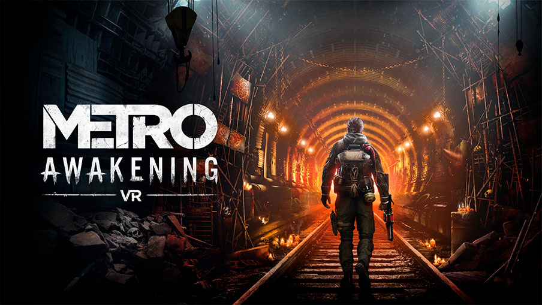
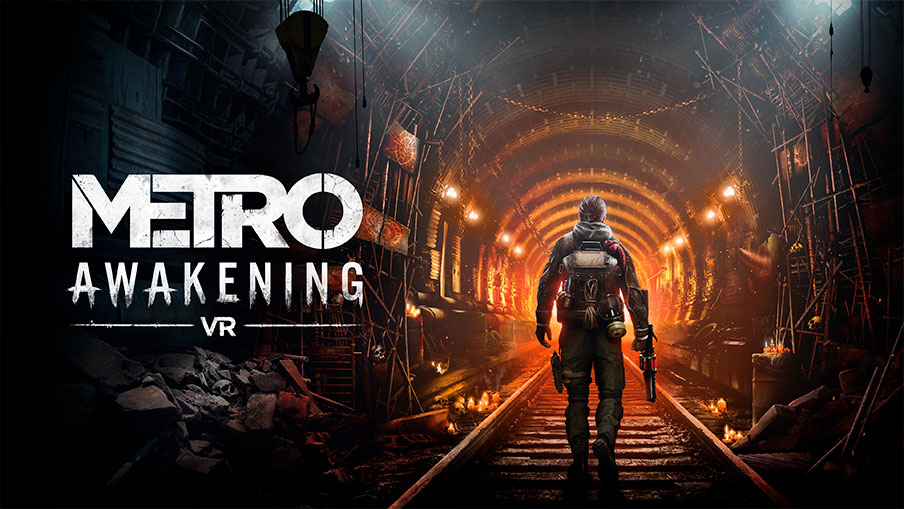

Metro Awakening
Calificación: 8,4/10
La saga Metro nos sorprende con una precuela diseñada en exclusiva para la realidad virtual que nos ha sumergido en la oscuridad de los túneles de Moscú como nunca antes.
Calificación: 8,4/10
La saga Metro nos sorprende con una precuela diseñada en exclusiva para la realidad virtual que nos ha sumergido en la oscuridad de los túneles de Moscú como nunca antes.
Calificación: 8/10
Call of Duty: Black Ops 6 llega por fin a consolas y PC para darle el relevo al polémico 'Modern Warfare 3'. ¿Ha acertado Treyarch con su nueva propuesta? ¿Merece la pena?